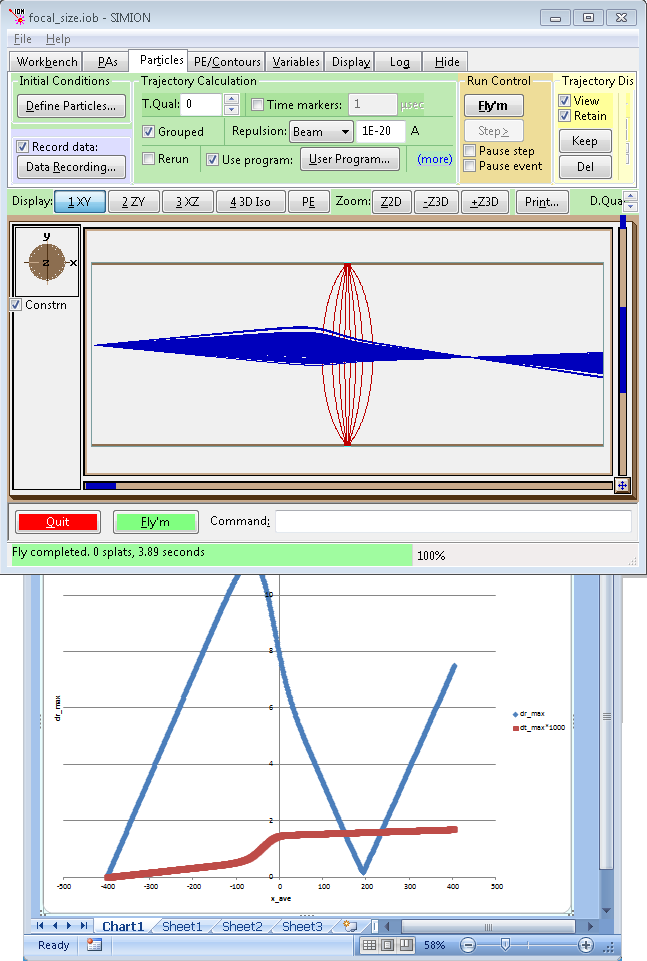

Description/Purpose
This example measures the spatial and temporal distribution of a bunch of particles at each step in their trajectory integration through a simple lens. The example also identifies the positions where these variations are at a minimum (e.g. near focal points).
As shown in the figure below, we trace some particles through a two-element lens and measure the magnitude of their spatial (dr) and temporal (dt) variations over their entire trajectory. As seen, there is a focal point near the right side where dr is minimized but dt is large (i.e. all particles pass near the focal point but at different times).

Figure: Output of running the example, including the Excel chart plotted of spatial and temporal variance as a function of x position (under space-coherent trajectory integration).
It must be emphasized that this example takes a simplified approach of only looking at the parameters of the particles in the current step of the trajectory integration when calculating their variations. This approach may require some adjustment if you want to measure some variation over multiple steps in the trajectory integration--e.g. time-averaged positions. For example, you might want to calculate the minimum width of a continuous particle beam. If you start tracing all particles at time t=0, these particles may later reach some (previously unknown) location of minimum beam width (x=x1) at different times. The positions of the traced particles at any specific time (t=t2) might not provide a truly accurate measure of the overall width the beam. What you ideally want is the (y,z) positions of all particles at whatever times they cross that exact location (x=x1). (Yes, you can record this information via test planes but only if the location of the test plane is previously determined.) Now, the approach in this example can often be adapted even for that case by modifying the way the trajectory integration is done: by using "space-coherent" integration (like in the Beam repulsion method, as discussed later below), where all particles are held spatially on the same plane (rather than to the same time) at each step in the integration. Still, there are cases where that is not applicable either. For example, if you want to compute the time-averaged density distribution of particles (ρ(x,y,z)) in an RF ion-trap, you'll need to adjust the code a bit to sum over the positional data acquired over all time-steps.
Because of the way this example is coded, you MUST use have Grouped flying enabled (via the checkbox on the Particles tab). Without this, particles are flown one after another, not at the same time, so only one particle will be flying per time-step, and no variation will be seen in each time-step. (Note: If you'd like to determine a beam disc of confusion with Grouped flying disabled, see Example: lens_properties\confusion_disc.iob, which stores beam data in memory during flight and then uses this data for analysis after all particles have all finished flying.)
The "space-coherent" approach to trajectory integration might not be as obvious, so some further words are given here. In Grouped flying, the trajectory integration is typically "time-coherent", where at each step in the integration all particles have the same time but may have different positions. However, if you also enable "Beam Repulsion", the trajectory integration will become "space-coherent", where at each step in the integration all particles have the same position along the longittudinal beam direction may have different positions along the lateral beam direction and different times. In space-coherent integration, instead of advancing time and computing the position of each particle, SIMION will advance the longitudinal position and compute lateral positions and times of each particle. This mode of trajectory integration happens to be a side-effect of enabling Beam Repulsion (see the Computational Methods Appendix of the SIMION 8.0/8.1 printed user manual). Even though you might not be interested in beam repulsion effects, you can still use this option but just set the corresponding repulsion amount to the minimum value (i.e. 1E-20 A) to effectively disable any repulsion effects but still use this special type of trajectory integration. Beware, however, that this type of trajectory integration is not always possible for all beam types. For example, it may be that a particle trajectory cannot be expressed as a unique function of longitudinal position (e.g. perhaps it reaches that position zero or more than one times). Cases where where space-coherent integration tends to bail out ("ion killed" event error) are where particles move in a bunch of different directions or chaotically (e.g. RF fields or randomized gas scattering).
Finally, there are multiple ways we might describe the degree to which particle parameters vary, such as the variance in X/Y/Z coordinates or the maximum, mean, or mean square distance between individual point positions and their first order moment. This code supports two metrics--maximum and mean distance from the first-order moment--but you can adjust the code for your own needs.
Usage
Running the example:
- 1. View spread.iob. (Click View on main screen and select the spread.iob file.)
- 2. If this is your first time using the example, you will be asked to refine (confirm that and press Refine).
- 3. Enable Grouped flying (on the Particles tab) and
fly particles. (Click Fly'm.)
Various output is displayed in the Log window tab. This same data is also written
to the file "out.csv" (which can be opened in Excel). A plot is also
automatically drawn in Excel at the end of the run.
The output in the Log window contains one line of data for each trajectory integration step
(i.e. the positions and spreads at that step) followed by a few lines
of summary information about the locations of minimum spreads (your results may vary due to randomization):
dr_max_best:dr(mm);x;y;z(mm);t(usec):+2.889e+000, +1.899e+002, -1.510e+000, +5.183e-003, +7.369e-001 dr_ave_best:dr(mm);x;y;z(mm);t(usec):+1.063e+000, +1.969e+002, -1.658e+000, +6.391e-004, +7.407e-001 dt_max_best:dt(mm);x;y;z(mm);t(usec):+0.000e+000, -1.962e+002, +5.172e+000, +1.377e-001, +3.438e-001 dt_ave_best:dt(mm);x;y;z(mm);t(usec):+0.000e+000, -1.962e+002, +5.172e+000, +1.377e-001, +3.438e-001
Notice that the position spreads (dr) are non-zero, whereas the time spreads (dt) are zero. The minimum dr occurs at a time where the average x is more or less 190 mm, which is obvious from visual inspection of the trajectories as well.
- 4. Enable Beam Repulsion with the repulsion amount (field next to it) set to the minimum
value possible (1E-20 A) and Click Fly'm again. Observe the summary results now:
dr_max_best:dr(mm);x;y;z(mm);t(usec):+1.711e-001, +1.923e+002, -1.571e+000, -1.735e-003, +7.382e-001 dr_ave_best:dr(mm);x;y;z(mm);t(usec):+7.946e-002, +1.953e+002, -1.639e+000, -4.737e-003, +7.398e-001 dt_max_best:dt(mm);x;y;z(mm);t(usec):+2.447e-004, -1.991e+002, +5.504e+000, +2.019e-001, +3.389e-001 dt_ave_best:dt(mm);x;y;z(mm);t(usec):+8.656e-005, -1.991e+002, +5.504e+000, +2.019e-001, +3.389e-001
Notice that the the time-spreads (dt) are no longer zero. Their minimum occurs at approximately x = -200 mm, which is on the boundary of the search range (see x_min and x_max variables on the Variables tab).
- 4. Further observations: You may do additional plots in Excel.
If the current directory contains an "out.csv" file
from a previous run, delete it, and then click Fly'm.
out.csv then can be loaded into Excel and plotted. Alternately, you can adjust the plotting code in
the focal_size.lua program.
Examine the flocal_size.lua code in a text editor for further understanding.
See Also
- Example: lens_properties - additional lens properties examples
- Example: test_plane - test plane example
Source
- 2013-05-16: spread.lua - remove 8.0 compatibility code; automatically enable grouped particle flying via sim_grouped = 1.
- 2011-12 - D.Manura